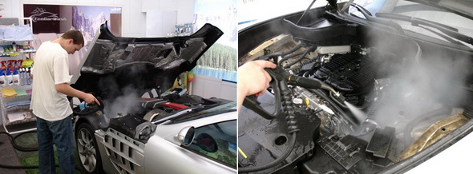
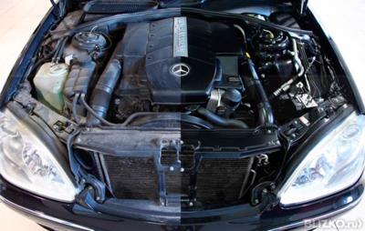
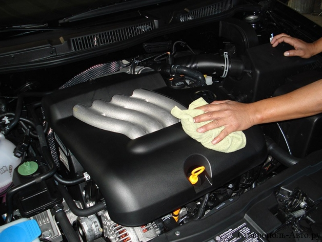

Как и другие части автомобиля, двигатель, нуждается в периодическом уходе. Накопление различных отложений и грязи может привести к повышению износа деталей двигателя, что в свою очередь, может стать причиной серьезных поломок. Для того, чтобы избежать возможных серьезных повреждений и, как следствие, больших материальных и временных затрат, двигатель автомобиля следует поддерживать в работоспособном состоянии.
Мойку двигателя целесообразно осуществлять по мере его загрязнения, однако, особого внимания двигатель требует после зимы, за время которой на нем скапливается достаточно сильный слой различных загрязнений. В нашем сервисном центре осуществляется мойка двигателей с гарантиейавтомобилей любых марок. Использование современных моющих средств, специально предназначенных для очистки двигателей позволяет эффективно и хорошо удалять любые виды загрязнений. Для мойки двигателей в наших автомастерских используются специальные шампуни для мойки двигателя, а также другие средства универсального характера.
Непосредственно в процессе мойки двигатель остается в прогретом состоянии, что делает вязкость загрязнений значительно меньше, и повышает эффективность моющих средств. Мойка двигателя осуществляется в три основных этапа: сначала двигатель обрабатывается специальным составом, затем его моют вручную, и на завершающем этапе его ополаскивают водой под давлением и осуществляют сушку сжатым воздухом. Такая технология позволяет мыть двигатель достаточно быстро, но при этом качественно.
Многие автовладельцы считают нецелесообразным обращаться за услугой мойки двигателя в сервисные центры, совершенно не понимая, что мыть двигатель самостоятельно опасно. Попытка самостоятельно осуществить мойку двигателя зачастую приводит к возгоранию, последствия которого могут оказаться самыми страшными и непредсказуемыми.
Наномойка Антидождь Инновационный автошампунь Полировка «Жидкое стекло»